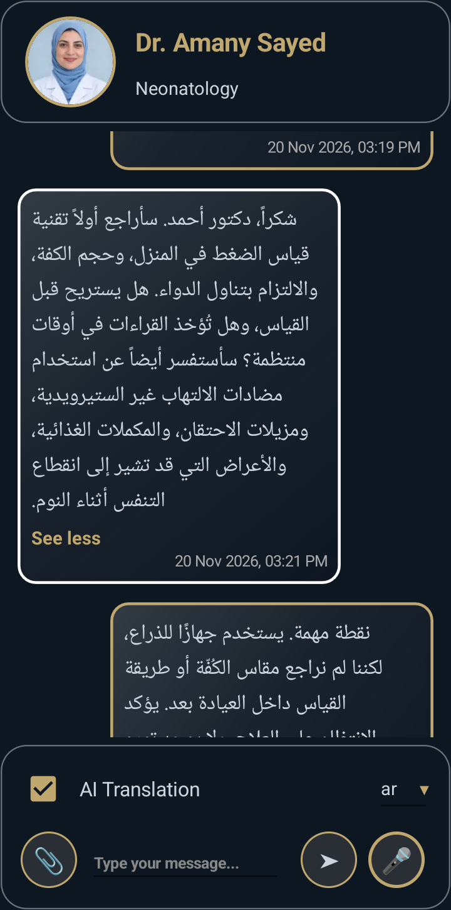

Product guides
Doctor chat with optional real-time translation
Doctors can write or send voice messages in their own language. When the recipient enables real-time translation and selects a language, incoming messages can be presented in that language. The paired screenshots show a text exchange on two phones.
Get it on Google Play Enlarge screenshot
Enlarge screenshotAhmed writes in Arabic
One exchange, two receiving languages
Dr. Ahmed writes in Arabic and Dr. Amany reads the message in English. She replies in English and Dr. Ahmed receives her reply in Arabic. Each pair shows the same message and timestamp on the sender’s and recipient’s screens. AI Translation is checked on both devices, with the chosen language visible.
Choose translation and verify important details
The recipient enables AI Translation and chooses the receiving language in the chat interface. The images demonstrate text translation, not a live translated voice call. Translation can contain mistakes or ambiguity: confirm clinically important doses, units, dates and negations with the other doctor when needed. Translation supports communication; it does not validate clinical content.
How to use it
- Open the conversation and enable AI Translation if you want translated incoming messages.
- Select the language in which you want to read incoming messages.
- Review the exchange and clarify any clinically important ambiguity.
Inside the application
Original app captures. Patient records and the clinical chat are fictional examples; private contact details are excluded.
Enlarge screenshotAhmed writes in Arabic
 Enlarge screenshot
Enlarge screenshotAmany receives the message in English
 Enlarge screenshot
Enlarge screenshotAmany replies in English


Enlarge screenshotAhmed receives the reply in Arabic
Questions about this feature
Does the sender have to change language?
The illustrated exchange allows each doctor to write in their own language, with translation enabled on the receiving side.
What do the paired captures show?
The same Arabic message received in English, followed by the same English reply received in Arabic, within the actual app.
Do the images demonstrate a translated voice call?
No. They show a text exchange. The product supports text and voice messages, while a voice call is a different workflow.